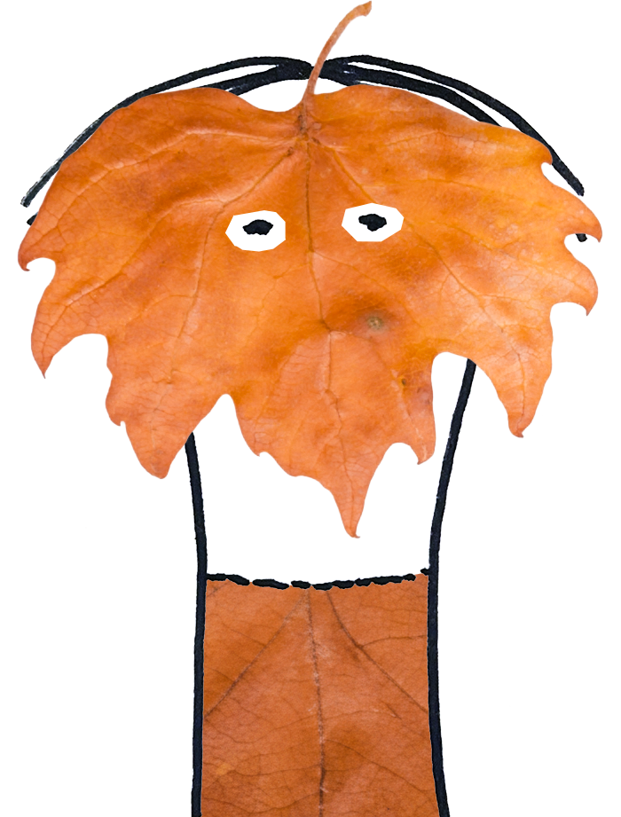
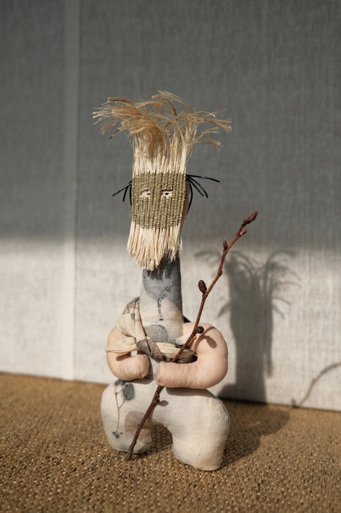
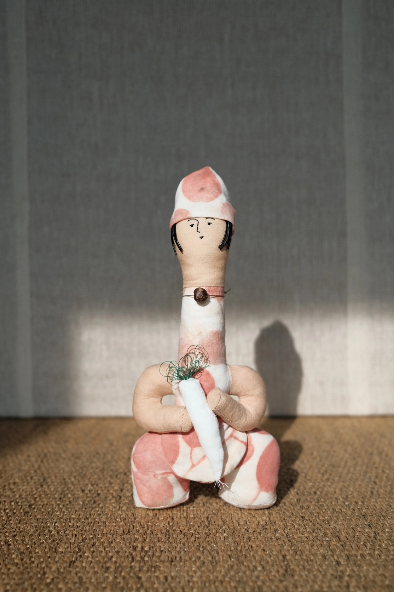

성주옹, 부뚜막옹, 삼신할미옹은 아주 오래전부터 사람들의 집과 마음 한구석을 묵묵히 지켜온 집지킴이 옹들이다. “집을 지키는 일은 곧 마음을 지키는 일.” 오랜 세월을 건너 대대로 이어져온 그 믿음을 고스란히 품은 26년생 집지킴이 옹즈 삼인방이 이제 새로운 터를 찾아 나섰다. 지금 이들은 서울숲 앞 네러티브 오브젝트에 머물며 자신들이 새롭게 지키게 될 보금자리를 기다리고 있다. 앞으로 이들이 어떤 집을 만나게 될지, 그곳에 또 어떤 이야기가 깃들게 될지 아직은 알 수 없다. 그러나 집을 지킨다는 것이 곧 마음을 지키는 일이라는 믿음만은 예전과 다르지 않다. 이들의 여정 속에서 따뜻한 인연과 오래도록 머물 이야기가 피어나기를 바라며, 독자 여러분의 많은 관심과 응원을 부탁드린다.
2026.02.17새로운 실이 도착했습니다. 성주옹의 친구를 곧 만들 예정입니다.
2026.02.15안녕하세요. 옹즈타운의 신문 <지팡이통신>이 2026년 1월 1일, 첫발을 내딛습니다. (박수갈채) 이곳에 앞으로 등장할 ‘뉴페이스 옹즈’의 소식과 함께, 얼핏 조용해 보이지만 알고 보면 하루도 조용할 날 없는 옹즈타운의 왁자지껄한 일상을 담아보려 합니다. 부디 적은 관심과 많은 응원 부탁드립니다. 얍.
2026.01.01
| Name | Seongju Ong (성주옹) |
| Material | Linen, Cotton, Straw |
| Date | 2026.02 |

| Name | Buttumak Ong (부뚜막옹) |
| Material | Cotton, Leather |
| Date | 2026.02 |